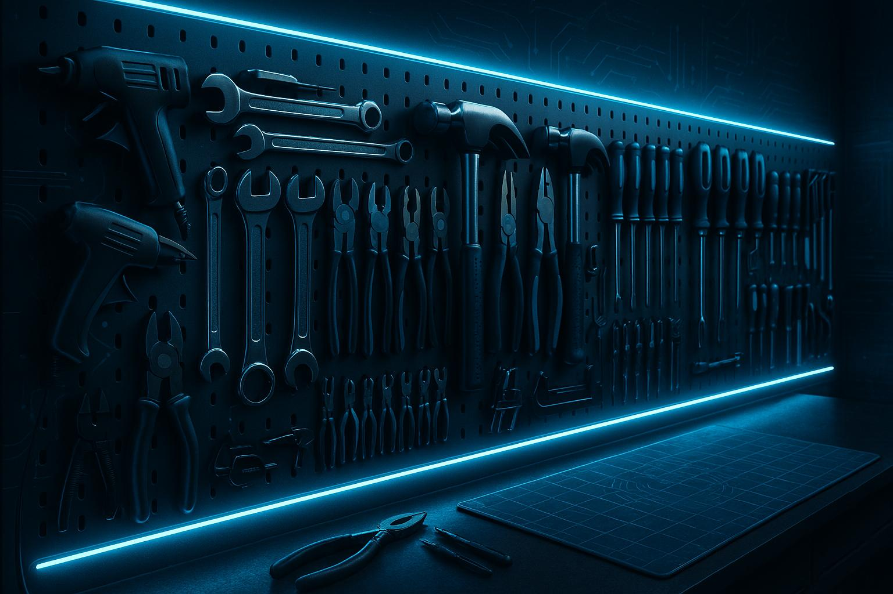
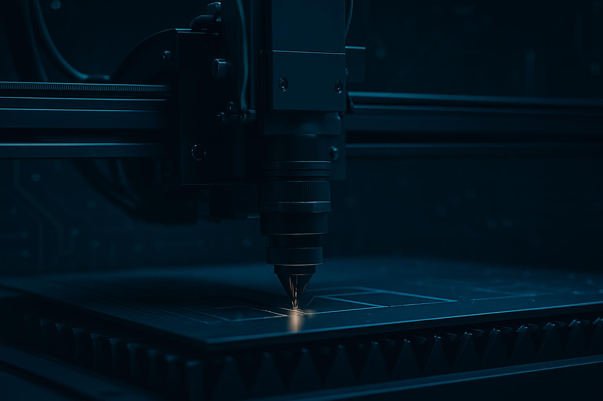
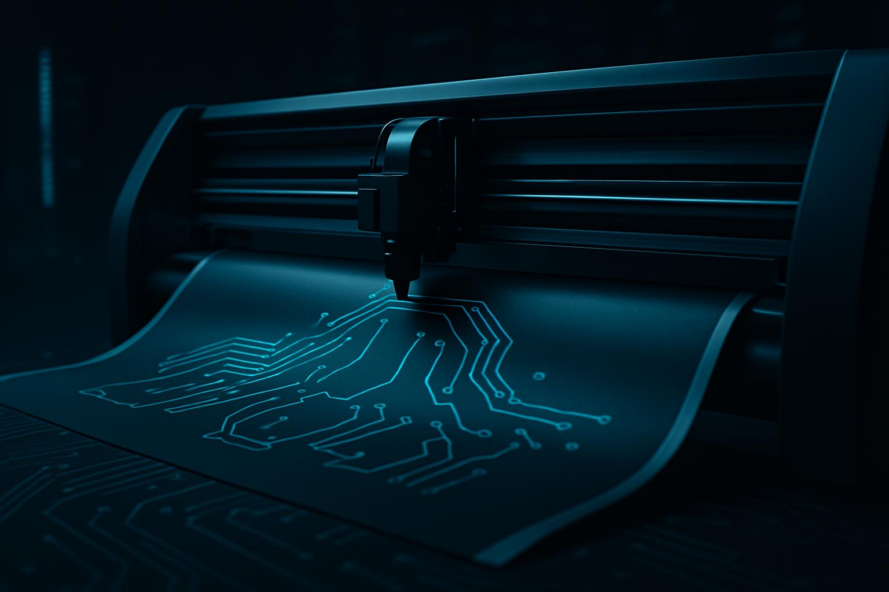
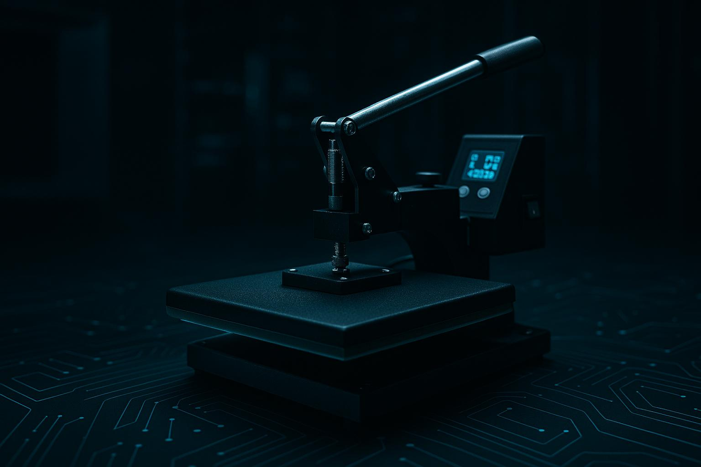

Exemplos de Projetos com Ferramentas

Organizador 5S

Montagem em MDF

Aplicação de vinil

Patches em tecido

Acabamento 3D

Fixação para Arduino

Gabarito & registro
Suporte de celular

Props para VR